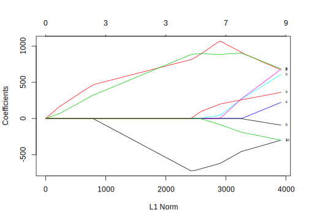

11.5 Random Forest
Since the tree correlation prevents bagging from optimally reducing the variance of the predicted values, a natural way to improve the model performance is to reduce the correlation among trees. That is what random forest aims to do: improve the performance of bagging by de-correlating trees.
From a statistical perspective, you can de-correlate trees by introducing randomness when you build each tree. One approach (T 1998; Y and D 1997) is to randomly choose \(m\) variables to use each time you build a tree. Dietterich(T 2000) came up with the idea of random split selection which is to randomly choose \(m\) variables to use at each splitting node. Based on the different generalizations to the original bagging algorithm, Breiman (Breiman 2001a) came up with a unified algorithm called random forest.
When building a tree, the algorithm randomly chooses \(m\) variables to use at each splitting node. Then choose the best one out of the \(m\) to use at that node. In general, people use \(m=\sqrt{p}\). For example, if we use 10 questions from the questionnaire as predictors, then at each node, the algorithm will randomly choose 4 candidate variables. Since those trees in the forest don’t always use the same variables, tree correlation is less than that in bagging. It tends to work better when there are more predictors. Since we only have 10 predictors here, the improvement from the random forest is marginal. The number of randomly selected predictors is a tuning parameter in the random forest. Since random forest is computationally intensive, we suggest starting with 5 value around \(m=\sqrt{p}\). Another tuning parameter is the number of trees in the forest. You can start with 1000 trees and then increase the number until performance levels off.
The basic random forest is as follows:
- Select the number of trees, B
- for i=1 to B do
- generate a bootstrap sample of the original data
- train a tree on this sample
- for each split do
- randomly select m（<p）predictors
- choose the best one out of the \(m\) and partition the data
- end
- for each split do
- use typical tree model stopping criteria to determine when a tree is complete without pruning
- end
When \(m=p\), random forest is equal to the bagging tree. When the predictors are highly correlated, then smaller \(m\) tends to work better. Let’s use the caret package to train a random forest:
# tune across a list of numbers of predictors
mtryValues <- c(1:5)
set.seed(100)
rfTune <- train(x = trainx,
y = trainy,
# set the model to be random forest
method = "rf",
ntree = 1000,
tuneGrid = data.frame(.mtry = mtryValues),
importance = TRUE,
metric = "ROC",
trControl = trainControl(method = "cv",
summaryFunction = twoClassSummary,
classProbs = TRUE,
savePredictions = TRUE))rfTune## Random Forest
##
## 1000 samples
## 11 predictor
## 2 classes: 'Female', 'Male'
##
## No pre-processing
## Resampling: Cross-Validated (10 fold)
## Summary of sample sizes: 899, 900, 900, 899, 899, 901, ...
## Resampling results across tuning parameters:
##
## mtry ROC Sens Spec
## 1 0.7169 0.5341 0.8205
## 2 0.7137 0.6334 0.7175
## 3 0.7150 0.6478 0.6995
## 4 0.7114 0.6550 0.6950
## 5 0.7092 0.6514 0.6882
##
## ROC was used to select the optimal model using
## the largest value.
## The final value used for the model was mtry = 1.In this example, since the number of predictors is small, the result of the model indicates that the optimal number of candidate variables at each node is 1. The optimal AUC is not too much higher than that from bagging tree:
If you have selected the values of tuning parameters, you can also use the randomForest package to fit a random forest.
library(randomForest)
rfit = randomForest(trainy ~ ., trainx, mtry = 1, ntree = 1000)Since bagging tree is a special case of random forest, you can fit the bagging tree by setting \(mtry=p\). Function importance() can return the importance of each predictor:
importance(rfit)## MeanDecreaseGini
## Q1 9.056
## Q2 7.582
## Q3 7.611
## Q4 12.308
## Q5 5.628
## Q6 9.740
## Q7 6.638
## Q8 7.829
## Q9 5.955
## Q10 4.781
## segment 11.185You can use varImpPlot() function to visualize the predictor importance:
varImpPlot(rfit) It is easy to see from the plot that segment and Q4 are the top two variables to classify gender.
References
T, Ho. 1998. “The Random Subspace Method for Constructing Decision Forests.” IEEE Transactions on Pattern Analysis and Machine Intelligence 13: 340–54.
Y, Amit, and Geman D. 1997. “Shape Quantization and Recognition with Randomized Trees.” Neural Computation 9: 1545–88.
T, Dietterich. 2000. “An Experimental Comparison of Three Methods for Constructing Ensembles of Decision Trees: Bagging, Boosting, and Randomization.” Machine Learning 40: 139–58.
Breiman, Leo. 2001a. “Random Forests.” Machine Learning 45: 5–32.